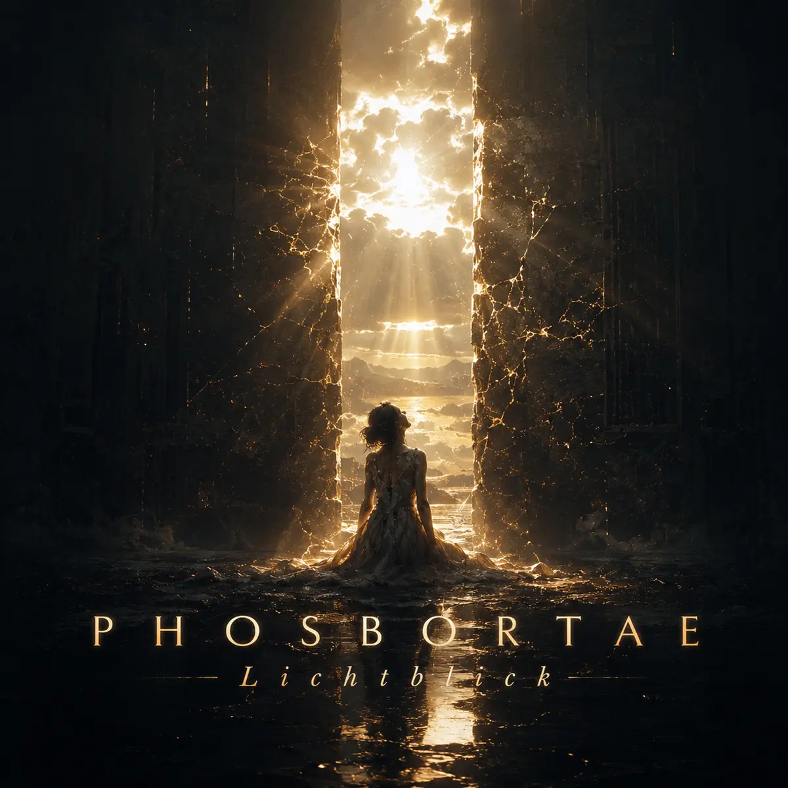
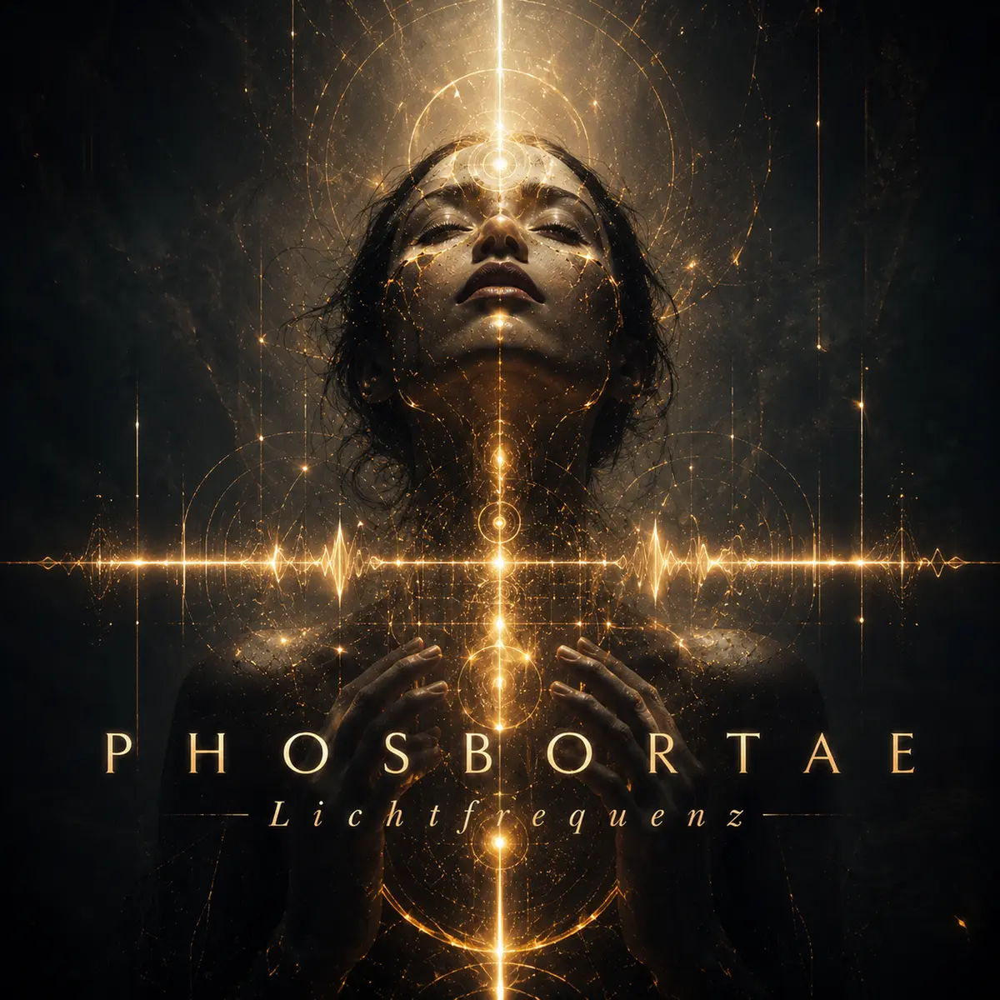
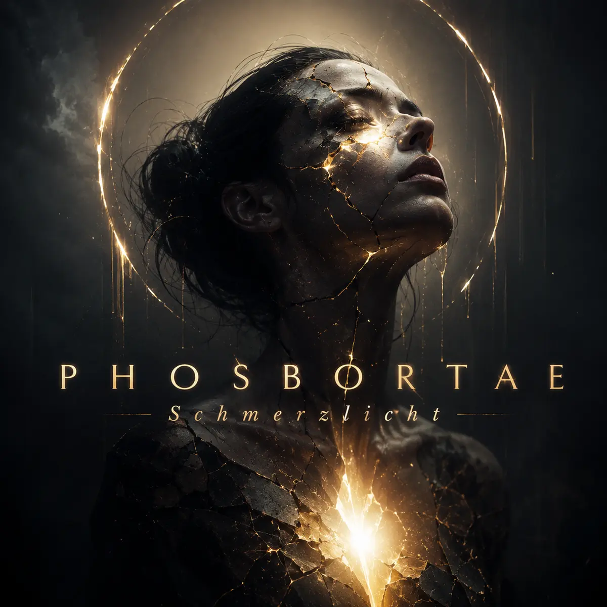

Veröffentlicht
Lichtblick
Ein vorhandener Teil des musikalischen PHOSBORTAE-Kosmos. Hör hinein und finde deinen eigenen Zugang.
Album hören ↗Menschen · Musik · Neue Möglichkeiten
Wir erschaffen ein Universum, das neue Welten hervorbringt.
Du bist ein Mensch. Ich bin ein Mensch. Das verbindet uns. In allem anderen dürfen wir verschieden sein — und gerade daraus kann etwas Neues entstehen.
Ein gemeinsamer Ursprung. Viele mögliche Wege.
Ein Song kann eine Tür öffnen.
Ein Gespräch kann Nähe schaffen.
Was entsteht, wenn wir einander wirklich begegnen?
A song can open a door.
A conversation can bring us closer.
What could emerge if we truly met one another?
Hören & Wiederfinden
Musik ist einer unserer ersten Wege zueinander: durch Dunkelheit, Veränderung und die Suche nach Verbindung. Hier kannst du drei bereits veröffentlichte Alben hören.

Ein vorhandener Teil des musikalischen PHOSBORTAE-Kosmos. Hör hinein und finde deinen eigenen Zugang.
Album hören ↗
Klang als Einladung, innezuhalten und eigene Bilder entstehen zu lassen.
Album hören ↗
Musik, die Raum für schwierige Empfindungen lässt. Du bestimmst selbst, was sie für dich bedeutet.
Album hören ↗Du nutzt schon einen Streamingdienst? Suche dort nach PHOSBORTAE und bleib bei deinem gewohnten Dienst. Die Direktlinks oben führen zu SoundCloud. Verfügbarkeit kann nach Dienst und Region abweichen.
Ein wachsender Zusammenhang
PHOSBORTAE ist mehr als ein Musikname. Menschen, Ausdrucksformen und Ideen sollen hier zusammenfinden. Diese Bereiche geben dem Gedanken erste Gestalt.
ZWISCHENRAUM · ONE SKY · Seelenklang — Bereiche im Aufbau. Kontakt: info@phosbortae.com
Die Struktur bleibt offen. Welche Bereiche eigene Welten tragen und welche miteinander wachsen, wird am gemeinsamen Fundament geprüft. Ein Musikthema allein begründet keine Welt.
Etwas mitnehmen
Wenn ein Thema dich oder jemanden in deinem Umfeld berührt, soll es nicht beim Hören bleiben. Diese kurzen Unterlagen können dir beim nächsten Gespräch oder bei der Suche nach Hilfe Orientierung geben.
Eine kompakte Notfallkarte für Erwachsene und Menschen, die unterstützen: erste Schritte und geprüfte Kontaktwege in Deutschland.
PDF öffnen / herunterladenStand: 12. November 2026 · Allgemeine Orientierung für Erwachsene.
Zuhören, nachfragen und gemeinsam einen kleinen nächsten Schritt finden — ohne Druck, Diagnose oder die Erwartung, alles lösen zu müssen.
PDF öffnen / herunterladenStand: 12. November 2026 · Allgemeine Orientierung für Erwachsene.
PHOSBORTAE betreibt keinen Notfalldienst. Bei akuter Gefahr nutze die unmittelbar zuständige Hilfe vor Ort; die Notfallkarte nennt die Wege für Deutschland. Eine Gruppenvermittlung oder mehrsprachige Beratung wird hier noch nicht angeboten.
Eigene Anknüpfungen finden
Im Orakel kannst du Interessen auswählen und mögliche Erkundungswege finden. Es bewertet dich nicht und entscheidet nicht über deinen Platz.
Ein erster, lokaler Erkundungsraum in deutscher Sprache. Deine Eingaben bleiben im geöffneten Browser. Menschen automatisch miteinander zu verbinden ist ein späteres Ziel.
Aus einem Gedanken wird Begegnung
Du musst nicht dieselben Vorlieben, Überzeugungen oder Erfahrungen haben. Interesse aneinander ist ein Anfang. Wenn dich ein Werk anspricht oder du eine Idee mitbringen möchtest, schreib uns.
Die Verbindung halten
Folge PHOSBORTAE dort, wo du gern unterwegs bist. Wenn ein Gedanke etwas in dir auslöst, teile ihn oder hinterlasse einen Kommentar. So können ihn auch andere entdecken.
Auch auf TikTok und Facebook sind Projektkonten eingerichtet. Die eindeutigen Direktadressen ergänzen wir, sobald sie geprüft sind.
Ein Anfang ist ein Anfang
Ein Satz, eine Frage, ein Gedanke. Schreib an:
info@phosbortae.comBitte keine akuten Hilferufe an diese E-Mail-Adresse: Das Postfach wird nicht durchgehend betreut.
Störtebekerstr. 34
18528 Bergen auf Rügen
Deutschland
Kontakt: info@phosbortae.com
Verantwortlich für journalistisch-redaktionelle Inhalte: Andreas Erpen, Anschrift wie oben.
Verantwortlicher: Andreas Erpen, Anschrift und Kontakt wie im Impressum. Diese Website wird über GitHub Pages bereitgestellt. Dabei können technisch erforderliche Verbindungs- und Protokolldaten verarbeitet werden, insbesondere IP-Adresse, Zeitpunkt und aufgerufene Ressource.
Diese Seiten setzen keine Analyse- oder Marketingcookies ein und betten keine externen Musikplayer, Videos oder Schriftarten ein. Externe Angebote werden erst beim Öffnen ihrer Links aufgerufen. Für sie gelten die Regeln des jeweiligen Anbieters. Die Sprachwahl gilt für den geöffneten Tab. Das Orakel verarbeitet Eingaben ausschließlich lokal im Browser; es versendet oder speichert hier keine Nutzerprofile.
Bei einer Kontaktaufnahme per E-Mail werden Ihre Angaben zur Bearbeitung Ihrer Anfrage verarbeitet. Im Rahmen der gesetzlichen Voraussetzungen bestehen Rechte auf Auskunft, Berichtigung, Löschung, Einschränkung, Datenübertragbarkeit und Widerspruch sowie ein Beschwerderecht bei einer Datenschutzaufsichtsbehörde.
This site uses GitHub Pages hosting, without analytics, marketing cookies or embedded external media. Following external links opens the respective provider. Oracle inputs stay in the browser. For privacy enquiries, contact the person listed in the legal notice.
Der Auftritt verwendet semantische Bereiche, Tastaturbedienung, sichtbare Fokusmarkierungen und anpassbare Schriftgrößen. Reduzierte Bewegung folgt der Systemeinstellung. Eine vollständige formale Barrierefreiheitsprüfung ist noch nicht abgeschlossen. Hinweise zu Barrieren bitte an info@phosbortae.com.